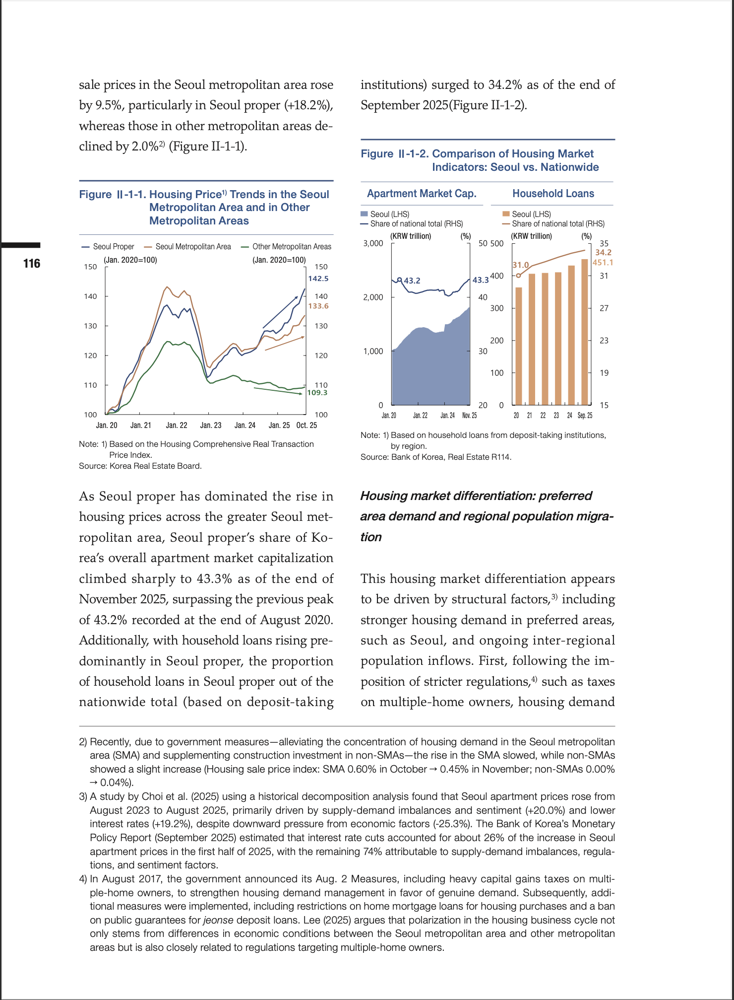

<div class="container">
  <span class="tag-pill">연구물 홍보</span>
  <h2 class="card-headline">AI가 만든 연구 홍보 영상</h2>
  <div class="shorts-split">
    <div class="shorts-left">
      <div class="page-viewer">
        <div class="page-spread" id="page-spread">
          
          
        </div>
        <div class="page-controls">
          <button class="page-btn" id="page-prev" onclick="pageNav(-1)" aria-label="이전 페이지">&#8249;</button>
          <span class="page-info" id="page-info">1-2 / 12</span>
          <button class="page-btn" id="page-next" onclick="pageNav(1)" aria-label="다음 페이지">&#8250;</button>
        </div>
      </div>
    </div>
    <div class="shorts-right">
      <div class="phone-frame">
        <video id="shorts-video" src="../assets/video.mp4" loop playsinline style="cursor:pointer;" onclick="this.paused?this.play():this.pause()"></video>
      </div>
    </div>
  </div>
  <p class="highlight">AI가 논문의 핵심 내용을 요약·시각화하여 <strong>60초 이내의 숏폼 영상</strong>으로 자동 변환합니다. SNS와 모바일 환경에 최적화된 연구 홍보 콘텐츠를 제작합니다.</p>
</div>
